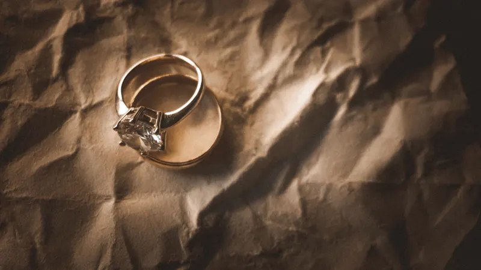
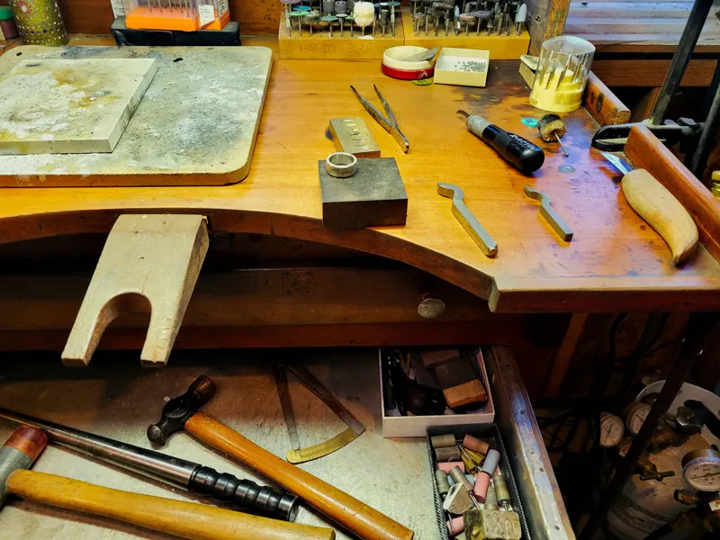
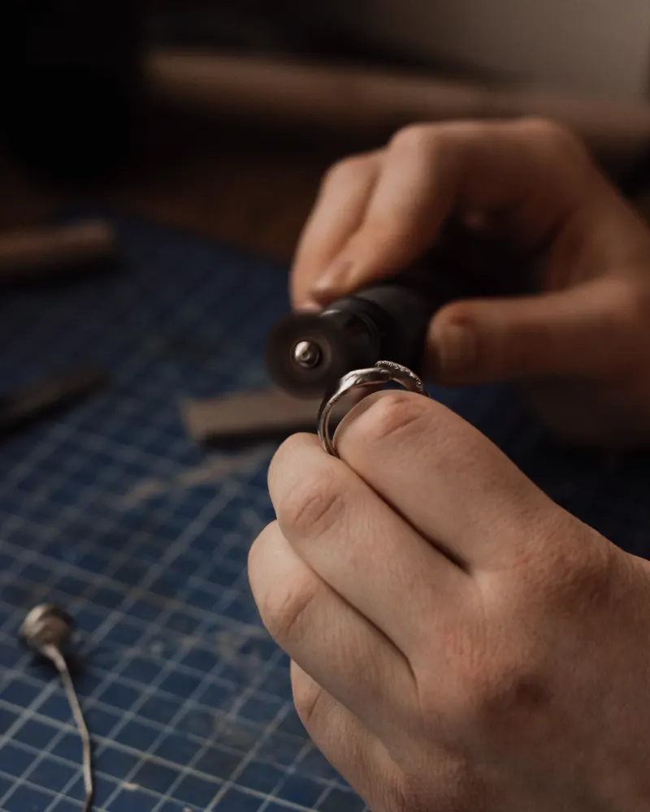
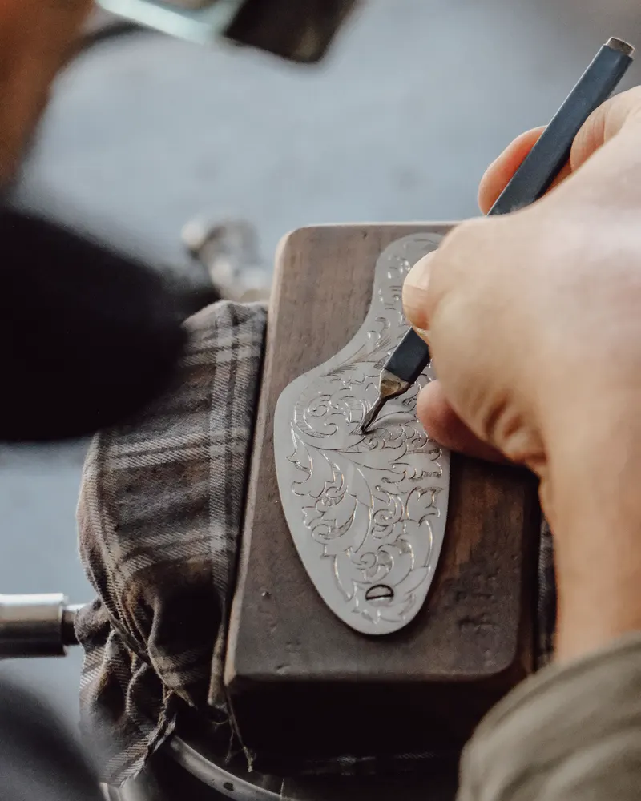
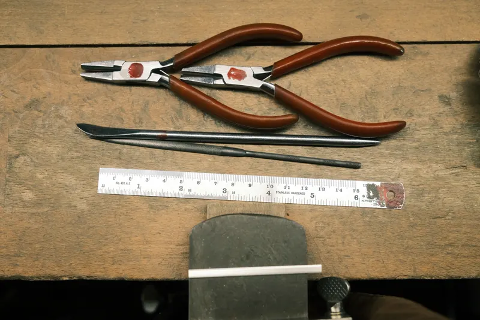
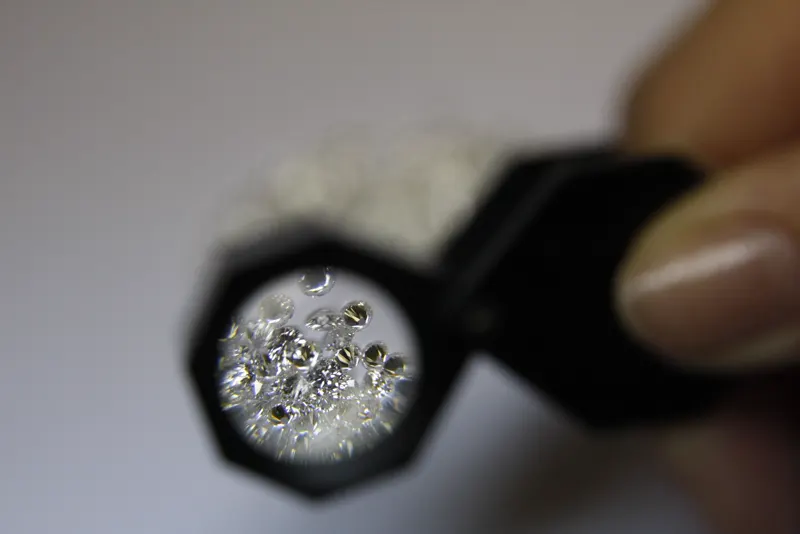

Gioielleria e laboratorio
Fedi su misura, gioielli che tornano come nuovi.
Nel laboratorio dietro il banco facciamo fedi su misura, ripariamo, incidiamo e rimettiamo a nuovo i gioielli di famiglia. Portaci il tuo pezzo: lo guardiamo insieme.


Il laboratorio
Il banco da orafo è a due passi dalla vetrina.
Ottavia ha imparato il mestiere nella bottega di famiglia. Oggi in laboratorio si lavora come allora: a mano, un pezzo alla volta, con il tempo che serve.
Puoi guardare mentre incidiamo un nome o chiudiamo una catenina, e chiedere tutto quello che vuoi sapere sul tuo gioiello.
Cosa facciamo
Dal banco, per te.
Prezzi d'esempio.
- su preventivo
Fedi su misura
Le disegniamo con te in due incontri, in oro giallo, bianco o rosa, con l'incisione dentro.
- da €15
Incisioni
Un nome, una data, una frase breve: su anelli, medagliette e bracciali.
- da €20
Pulizia e lucidatura
Il gioiello torna a brillare, e controlliamo griffe e chiusure.
- da €25
Riparazioni
Catenine rotte, chiusure da cambiare, anelli da allargare o stringere.
In laboratorio
Mani, attrezzi, pazienza.




Recensioni d'esempio
Gioielli che hanno una storia.
«Hanno rimesso a nuovo l'anello della nonna: sembra uscito ieri dal laboratorio.»
Elena · 5 su 5
«Le nostre fedi, disegnate insieme in due incontri, con le nostre iniziali dentro.»
Matteo e Chiara · 5 su 5
«Una catenina rotta, sistemata in giornata e a un prezzo onesto.»
Rosa · 5 su 5
Dove siamo
Sul corso, all'angolo con la piazzetta.
Orari d'esempio
Ti aspettiamo dal martedì al sabato.
- Martedì–sabato
- 9:30–13 e 15:30–19:30
- Domenica e lunedì
- chiuso